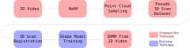

Human Digitization
- A number of tasks relate to human digitization
- I mention a few of them below
Facial Reenactment
- Facial reenacment involves learning the shape and appearance of a subject's face
- We can then render the subject in novel poses and expressions using the learned representation
- As an example, "NeRF for 4D Facial Avatars" makes use of a 3D morphable model (3DMM) to extend neural radiance fields (NeRF)
- Vanilla NeRF conditions on position and view direction to predict coefficients for volumetric rendering
- "NeRF for 4D Facial Avatars" extends NeRF to also condition on pose and expression from a 3DMM
- After training, the model can render the subject in new facial poses and expressions
NeRF for 4D Facial Avatars
Person and Scene Reconstruction
- In 3D reconstruction we want to capture a 3D scene in high fidelity
- Capturing a 3D scene requires multiple views
- Foreground motion makes capturing scenes with people more difficult
- Nerfies extend NeRF to handle scenes with mild deformations
- They achieve this by introduction a deformation field that deforms input coordinates to a canonical NeRF
- The resulting model can produce 3D reconstructions of humans from a selfie video, dubbed "Nerfies"
NeRFies
3D Statistical Model Acquisition
- 3D morphable models (3DMMs) are a 3D generative model for a known shape, e.g., for faces
- 3DMM creation proceeds by first collecting a dataset of 3D scans
- We then align and register the 3D scans
- We assume that the scans lie on a linear subspace
- Hence, we form a 3DMM by fitting linear shape and expression bases to the aligned scans
- FLAME is a 3DMM available for commercial use that is a middle ground between high and low-end 3DMMs
- FLAME's linear shape space was learned from 3800 aligned scans of human heads
FLAME

Problem
Slow Deployment
Potential Solution
Speedup via Specialization
Problem
Data Collection for Niche Tasks
Potential Solution
Specialization from Generic models
Project Idea
Building 3DMMs from NeRFies
- This project falls under the "Data Collection for Niche Tasks" problem category
- This is because we assume that we want to create new 3D statistical models of humans with specialized purposes
- E.g., we may want to create a 3D statistical model with articulated eyeballs, or with hair as part of the head model
- Existing methods would require a sophisticated 3D scan setup to collect training data for each new model
- Furthermore, existing 3D scan datasets are not available for commercial use
Project Aim
- This project's aim is to learn a 3D statistical model from video data instead of 3D scans
- Learning from video data would give us the ability to build 3D statistical models from internet-scale data
- We could build specialized datasets to train 3D statistical models on specific tasks with this plentiful video data
- For this project we'll specifically focus on 3D Morphable Models (3DMMs) for human heads
- But, the techniques developed should be general enough to create other model variants for different object types
Inverse Rendering
- To go from video to 3D model we will use inverse rendering
- Suppose we have an image I, and parameters $\theta$ describing a scene (e.g., normals, albedo, lighting, geometry, etc.)
- Then we suppose that a differentiable renderer $R$, parametrized by $\theta$, formed our image as $$ I = R(\theta) $$
- We can then optimize for the scene parameters by differentiating with respect to them to get $$ \frac{\partial I}{\partial \theta} $$
- With suitable priors on $\theta$ we hope to use this setup to produce high quality scene parameters $\theta$
Inverting NeRF to get Face Geometry
- We want to get face geometry $\theta$ from a set of video frames $\{I_j\}$
- We propose to do so using Neural Radiance Fields (NeRF) as our differentiable renderer $R$
- NeRF learns an implicit representation of the scene through a differentiable volumetric renderer
- For each 3D position $\mathbf{x} = (x, y, z)$ in the scene, NeRF learns a scattering coefficient $\sigma_s(\mathbf{x})$
- NeRF also learns sRGB colours $c(\mathbf{x}, \Theta)$ for position $\mathbf{x}$ and direction $\Theta$, a standin for irradiance
- The resulting NeRF model can re-render scenes from novel views, as shown below
Sampling Pseudo 3D Scan from NeRF
- We are interested in using NeRF's learned scattering coefficients $\sigma_s$ and colours $c$
- Scattering coefficients $\sigma_s$ give a probability of light scattering at a 3D point
- This coefficient should be near 1 close to the surface
- Therefore, we could use $\sigma_s$ as a probability distribution describing the surface of a human head
- We can sample a point cloud close to the surface to replace 3D scans used in traditional 3DMM building pipelines
2D Video to 3DMM Overview
Potential Risks
- Does NeRF learn a physically meaningful geometry?
- May have to regularize NeRF to enforce this
- We don't know the foreground / background status of NeRF 3D points a priori
- May have to use a technique to segment out human head points from other scene points
Project Idea
Faster Framerates with Neural Coded Exposure
- Falls under the "Slow Deployment" problem category